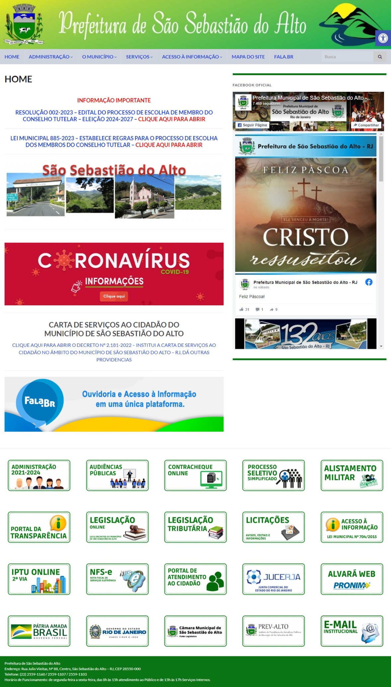
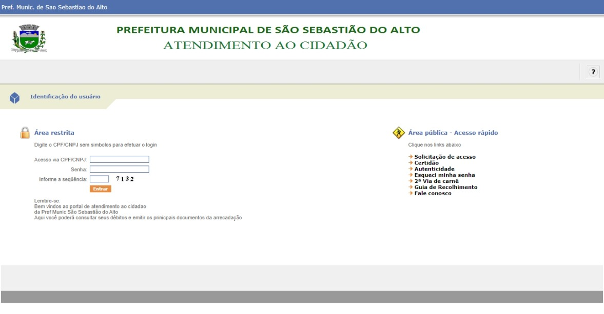
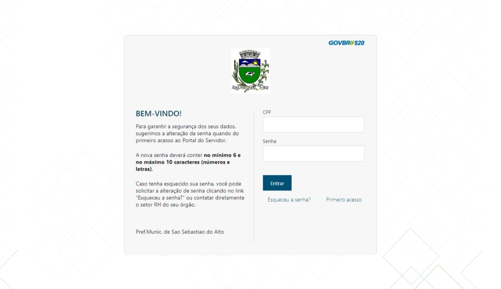

Avaliação de IHC - Prefeitura de São Sebastião do Alto (SSALTO)
1. Introdução
Neste documento temos como objetivo avaliar quesitos de usabilidade do sítio pertencente ao SSALTO, um ambiente responsável pelo acesso a informação do município de São Sebastião do Alto-RJ. De maneira que avaliaremos por um método de inspenção através da avaliação heurística do sítio por Nielsen. Será considerada relevante para a avaliação as 10 heurísticas proposta pelo artigo "Avaliação Heurísticas de Sítios na Web".

Figura 1: Página principal do sítio do SSALTO (Fonte: SSALTO)
2. Objetivos
Como descrito no planejamento (disponível aqui), os questionamentos são as seguintes:
- O sítio segue os padrões da empresa?
- O sítio segue os padrões requisitados pelo W3C de acessibilidade?
- O sistema possui clareza para o usuário?
- A interface é agradável ao usuário?
- O usuário consegue atingir seu objetivo de forma mais eficiente?
- Por meio da apropriação da tecnologia é possível oferecer um sistema de forma mais interessante aos usuários?
3. Métodos de Avaliação
A avaliação a ser executada usará do modelo descrito no artigo “Avaliação Heurística de Sítios na Web” (MACIEL et al., 2004), modelo que, baseado nas heurísticas de Nielsen, amplia suas definições e cria caminhos específicos para a avaliação de IHC de sítios. O método, por ser de baixo custo comparado a outros métodos de inspeção e não necessitar da presença do usuário como os métodos de observação, é interessante para o contexto da disciplina.
3.1 Visibilidade do estado do sistema
| 1. Visibilidade do estado do sistema |
|---|
| Verificação:O sistema possui clareza para o usuário |
| Grau de severidade: [ ] 0 - Sem importância [ ] 1 - Cosmético [ ] 2 - Simples [X] 3 - Grave [ ] 4 - Catastrófico |
| Natureza do problema: [ ] Barreira [X] Obstáculo [ ] Ruído |
| Perspectiva do usuário: [ ] Problema Geral [X] Problema Preliminar [ ] Problema Especial |
| Perspectiva da tarefa: [X] Problema Principal [ ] Problema Secundário |
| Descrição do Problema: Contexto: O usuário acessou o sítio e clicou no botão “Atendimento ao cidadãol”, localizado na aba “Serviços da página”. A página da figura 2 foi mostrada ao usuário. Causa: Há páginas no sítio que não fazem parte do escopo principal da página, com redirecionamentos para outras páginas . Efeitos sobre o usuário: Desorientação e desconforto ao utilizar o sistema. Efeitos sobre a tarefa: Confusão sobre localização dentro de uma tarefa, dificuldade na alternância de tarefas. Correção possível: Padronizar as páginas do sítio, mantendo tudo em uma só página, sem redirecionamento para outras. |

Figura 2: Página de autenticação do Portal de atendimento ao cidadão - autoatendimento da SSALTO (Fonte: SSALTO)
3.2 Correspondência do sistema com o mundo real
2. Correspondência do sistema com o mundo real O site possui uma boa relação entre o sistema e o mundo real, trata de assuntos de forma geral com abrangência com alguns termos fora do entendimento geral, mas não foge de seu objetivo de entregar tais informações.Portanto, podemos afirmar que o site condiz com o mundo real.
3.3 Controle do usuário e liberdade
3 Controle do usuário e liberdade O site possui várias abas de redirecionamento para outras páginas de solicitações de serviços por exemplo, Porém foi percebido que algumas problemáticas relacionadas ao controle de usuário e sua liberdade no uso do sistema.
3.4 Correspondência do sistema com o mundo real
2. Correspondência do sistema com o mundo real O site possui uma boa relação entre o sistema e o mundo real, trata de assuntos de forma geral com abrangência com alguns termos fora do entendimento geral, mas não foge de seu objetivo de entregar tais informações.Portanto, podemos afirmar que o site condiz com o mundo real.
3.5 Controle do usuário e liberdade
3 Controle do usuário e liberdade O site possui várias abas de redirecionamento para outras páginas de solicitações de serviços por exemplo, Porém foi percebido que algumas problemáticas relacionadas ao controle de usuário e sua liberdade no uso do sistema.
3.6 Consistência e padrões
| 4. Consistência e padrões |
|---|
| Verificação:O sítio segue o padrão da empresa? |
| Grau de severidade:[ ] 0 - Sem importância [X] 1 - Cosmético [ ] 2 - Simples [ ] 3 - Grave [ ] 4 - Catastrófico |
| Natureza do problema: [ ] Barreira [ ] Obstáculo [X] Ruído |
| Perspectiva do usuário: [X] Problema Geral [ ] Problema Preliminar [ ] Problema Especial |
| Perspectiva da tarefa: [ ] Problema Principal [X] Problema Secundário |
| Descrição do Problema: Contexto: O usuário acessou o sítio e clicou no botão “Atendimento ao cidadão Causa: Há páginas no sítio que não mostram o estado do sistema para o usuário. Efeitos sobre o usuário: Confusão e desconforto. Efeitos sobre a tarefa: Nenhum. Correção possível: Uniformização do padrão de páginas do sítio. |
3.7 Reconhecimento em vez de memorização
5. Reconhecimento em vez de momorização
O site possui muito elementos visuais inicialmente, sendo também bem identificados. Ao utilizar o elemento textual em sua maioria de seu conteúdo, o sistema não consiste em se apoiar em memorização do usuário, Os elementos como formulários são bem definidos e possuem campos bem identificados, podendo ser identificados mais rapidamente. Portando, o site não se apoia em memorização do usuário, porém possui um bom grau de reconhecimento.

Figura 3: Página de autenticação do Portal de ContraCheque Online - autoatendimento da SSALTO (Fonte: SSALTO)
| 6. Flexibilidade e eficiência de uso |
|---|
| Verificação: O usuário consegue atingir seu objetivo de forma mais eficiente? |
| Grau de severidade: [ ] 0 - Sem importância [ ] 1 - Cosmético [X] 2 - Simples [ ] 3 - Grave [ ] 4 - Catastrófico |
| Natureza do problema: [ ] Barreira [ ] Obstáculo [X] Ruído |
| Perspectiva do usuário: [X] Problema Geral [ ] Problema Preliminar [ ] Problema Especial |
| Perspectiva da tarefa: [ ] Problema Principal [X] Problema Secundário |
| Descrição do Problema: Contexto: O usuário acessou a página da “ContraCheque Online” (Figura3b) e mesmo que já possua uma conta, é necessário que insira seu CPF e senha para ter acesso. (Figura 4). Causa: O sítio não possui nenhum tipo de facilitador para usuários experientes. Efeitos sobre o usuário: Perda de tempo. Efeitos sobre a tarefa: Nenhum. Correção possível: Fornecer facilitadores e atalhos para maior eficiência do usuário |
Figura 3: Página de autenticação do Portal de Segunda Via IPTU - autoatendimento da SSALTO (Fonte: SSALTO)
| 6. Flexibilidade e eficiência de uso |
|---|
| Verificação: A interface é insatisfatória? |
| Grau de severidade: [ ] 0 - Sem importância [] 1 - Cosmético [X] 2 - Simples [ ] 3 - Grave [ ] 4 - Catastrófico |
| Natureza do problema: [ ] Barreira [X] Obstáculo [ ] Ruído |
| Perspectiva do usuário: [X] Problema Geral [ ] Problema Preliminar [ ] Problema Especial |
| Perspectiva da tarefa: [ ] Problema Principal [X] Problema Secundário |
| Descrição do Problema: Contexto: O usuário acessou a página principal do sítio (Figura1). O usuário não sabe onde procurar para realizar tarefas. Causa: A interface não provê meios satisfatórios de indicar onde devem ser realizadas certas tarefas. Efeitos sobre o usuário:Desorientação, frustração, insatisfação. Efeitos sobre a tarefa: Nenhum. Correção possível: Melhor organização da interface do sítio para mais fácil reconhecimento de tarefas e maior satisfação do usuário. |
3.8 Projeto estético e minimalista
7. Projeto estético e milimalista O sítio possui uma estética poluída e sobrecarregada de informações contrastantes que deixam um desconforto visualmente que acaba deixando a desejar enquanto utilizamos o sítio. Podendo refletir nas resoluções de tarefas desntro o mesmo, causando desconforto e insatisfação pelo usuário.
3.9 Estética e design minimalista
| 8. Estética e design minimalista |
|---|
| Verificação: Por meio da apropriação da tecnologia é possível oferecer um sistema de forma mais interessante aos usuários? |
| Grau de severidade: [ ] 0 - Sem importância [X] 1 - Cosmético [ ] 2 - Simples [ ] 3 - Grave [ ] 4 - Catastrófico |
| Natureza do problema: [ ] Barreira [ ] Obstáculo [X] Ruído |
| Perspectiva do usuário: [X] Problema Geral [ ] Problema Preliminar [ ] Problema Especial |
| Perspectiva da tarefa: [ ] Problema Principal [X] Problema Secundário |
| Descrição do Problema: Contexto: O usuário acessou o sítio e clicou no botão “Atendimento ao Cliente" Causa: A interface da página da figura 2 não tem atributos que guiem o usuário por seu uso. Efeitos sobre o usuário: Desconforto, frustração. Efeitos sobre a tarefa: Nenhum. Correção possível: Criação de nova interface para a página de “Atendimento ao cidadão”, mantendo os |
4. Conclusão
Concluímos que ao analisar o sítio, os problemas não são impecílios para a realização de tarefas dentro do mesmo. No entanto, algumas distrações foram encontradas nesta avaliação que acabam criando obstáculos para a finalização das tarefas no sítio, como desfalques cosméticos; como a irregularidade de elementos na tela inicial, determinando uma página sobrecarregada. A falta de atributos que guiem o usuário em determinadas páginas, faz que o sítio se torne pouco intuitivo e com baixa memorização. Estas falhas, no geral, afetam o usuário diretamente pela insatisfação em achar as ferramentas do sítio causando ruídos dentro de determinadas ações na página.
5. Referências bibliográficas
[1] MACIEL, C. et al. Avaliação Heurística de Sítios na Web. [s.d.].
[2] Barbosa, S. D. J.; Silva, B. S. da; Silveira, M. S.; Gasparini, I.; Darin, T.; Barbosa, G. D. J. (2021) Interação Humano-Computador e Experiência do usuário. Autopublicação. ISBN: 978-65-00-19677-1.
[3] W3C. CARTILHA DE ACESSIBILIDADE NA WEB: Cartilha de Acessibilidade na Web. Brasil: Creative Commons, 2009. Disponível em: https://www.w3c.br/pub/Materiais/PublicacoesW3C/cartilha-w3cbr-acessibilidade-web-fasciculo-I.html. Acesso em: 09 abr. 2023.
6. Histórico de versão
| Versão | Data | Descrição | Autor(es) | Revisor(es) |
|---|---|---|---|---|
1.0 |
12/04/23 | Criação do documento e adição do conteúdo | Amanda N. | João M. |